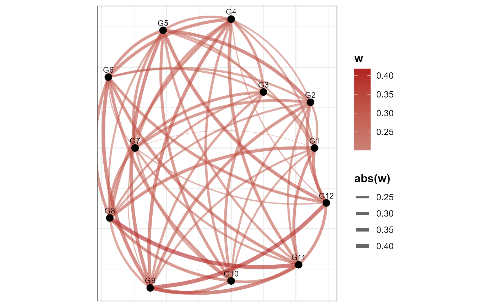

Radial hive plot of gene co-expression
VisGeneCoexpHive.RdVisualize a radial network of selected genes; edge weight reflects co-expression across cells.
Usage
VisGeneCoexpHive(
object,
genes,
reduction = "pca",
threshold = 0.2,
low_color = "steelblue",
mid_color = "grey80",
high_color = "firebrick"
)Examples
obj <- SeuratVisProExample()
#> Modularity Optimizer version 1.3.0 by Ludo Waltman and Nees Jan van Eck
#>
#> Number of nodes: 300
#> Number of edges: 11471
#>
#> Running Louvain algorithm...
#> Maximum modularity in 10 random starts: 0.8323
#> Number of communities: 3
#> Elapsed time: 0 seconds
VisGeneCoexpHive(obj, genes = paste0('G', 1:12), threshold = 0.2)
#> Warning: The `slot` argument of `GetAssayData()` is deprecated as of SeuratObject 5.0.0.
#> ℹ Please use the `layer` argument instead.
#> ℹ The deprecated feature was likely used in the SeuratVisPro package.
#> Please report the issue at <https://example.com/SeuratVisPro/issues>.
#> Warning: Using `size` aesthetic for lines was deprecated in ggplot2 3.4.0.
#> ℹ Please use `linewidth` instead.
#> ℹ The deprecated feature was likely used in the SeuratVisPro package.
#> Please report the issue at <https://example.com/SeuratVisPro/issues>.
